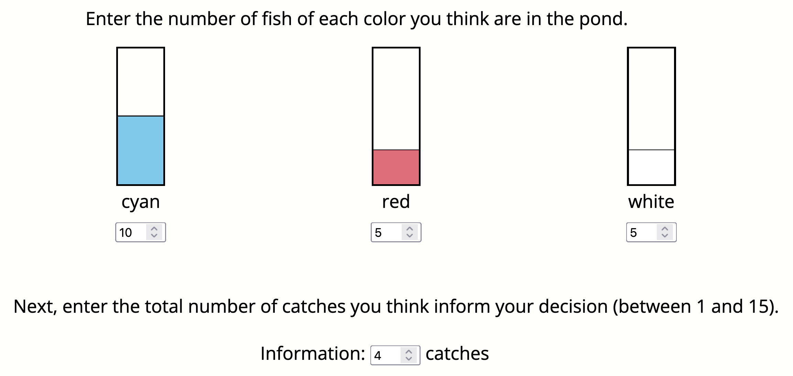

In this experiment, you will play the role of a wildlife researcher who is studying fish populations in different lakes. You will visit four lakes that each have 100 fish in them. There are different types of fish in each lake. Your goal is to learn about how many of each type of fish live in the lakes.
The experiment consists of three phases
When you first visit a lake, you will go fishing. You will catch a series of fish. After catching a fish, you release it back into the lake. In this phase, you should click the fishing rod to go fishing. You will then see which type of fish you caught.


You will not be able to see which type of fish you caught after you release them, so make sure you remember which fish you caught.
After catching some fish, you will need to leave the lake. Before you leave, you will have the opportunity to write a message for the next participant.
The next participant will also try to learn the distribution of fish in the same lake. You should write a message that will help them do that. However, you will only have ${messageWritingTime} seconds to write your message.
Your bonus will depend on the performance of the participant who reads your message, so make sure to write a helpful message!
Finally, you will report your findings. You will be asked to predict how many fish of each color there are in the lake, along with how confident you are in that prediction.
You will make a prediction using an interface that looks like this:
In addition to predicting the numbers of fish, you will be asked to specify a range that you are 50% sure contains the true numbers of fish. You will earn a bonus if the true numbers of fish fall in the range you specify. Your bonus will be larger the smaller your range is (i.e. the more confident you are in the prediction).